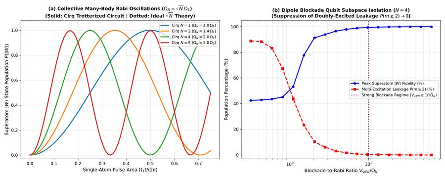

Yin Li
PhD Physicist — neutral-atom quantum computing, Rydberg-atom quantum optics, and collective-qubit control. Below: gate-level Google Cirq reproductions of two published experiments, plus the original research code behind four more.
Cirq reproductions
Full from-scratch reimplementations built on a shared Cirq library — custom gates, exact Kraus channels, a device model, a noise model derived from real T1/T2, and compiler transformer passes — validated against NumPy/analytic oracles by an 70+ test pytest suite.

Original research code
The author's original NumPy/SciPy/C++ research code behind three more papers, lightly cleaned up into standalone scripts (dead cells and duplicate notebooks removed) rather than rewritten into Cirq.


Exploratory / unpublished

Jaynes-Cummings · Biphoton Generation · Array Scattering
Three independent lines of exploratory work, kept as standalone scripts rather than a single project.